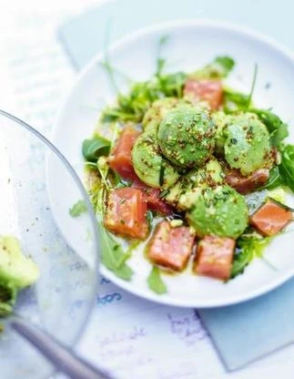

Salmon avocado salad

Avocado + salmon = a delicious combo that's sure to please!
This delightful recipe combines the creaminess of avocado with tender and flavorful salmon. The salad is refreshing and perfect for a quick and satisfying meal.
Ingredients
- 3 avocados
- 1 lemon
- 200 g marinated salmon
- 2 handfuls of arugula
- 3 tablespoons olive oil
- 2 tablespoons apple cider vinegar
- 1 tablespoon whole grain mustard
- 1 bunch of cilantro or basil
- freshly ground pepper
Steps
- Cut open the avocados, remove the pits, and scoop out the flesh with a large spoon.
- Place the avocado chunks in a salad bowl and drizzle them with the lemon juice.
- Cut the marinated salmon into cubes, add them to the salad bowl along with the washed arugula and washed and chopped cilantro or basil.
- Mix the oil, vinegar, mustard, salt, pepper, and 2 tablespoons of water, emulsify the sauce and pour it over the salad. Gently stir and serve.
Tip
You can replace the marinated salmon with smoked salmon fillet or thin strips of smoked salmon.